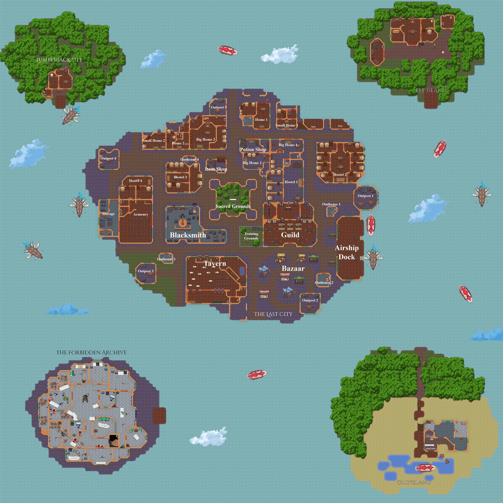
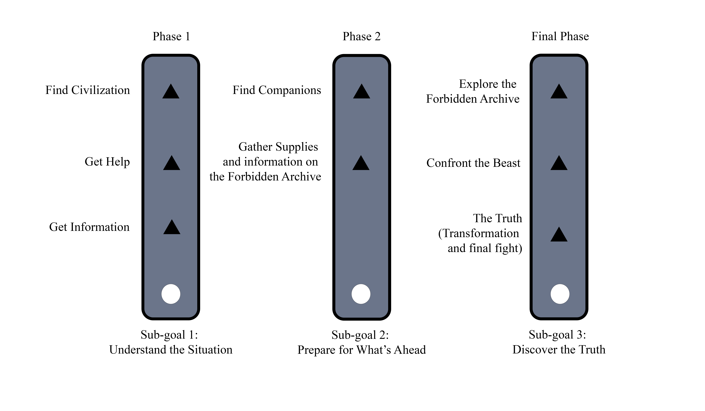
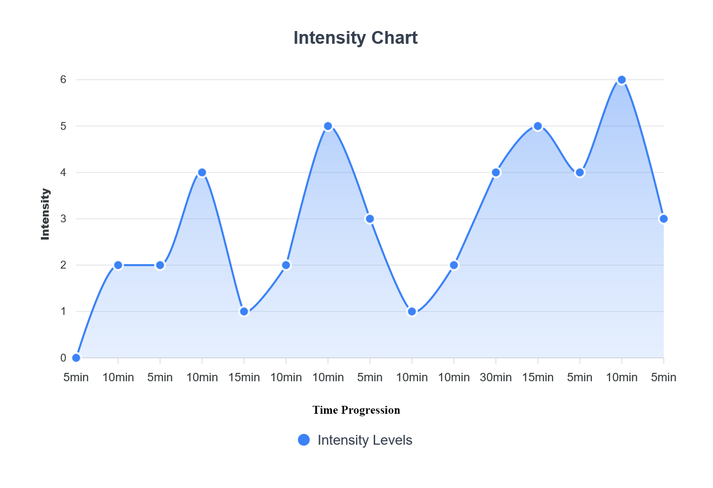
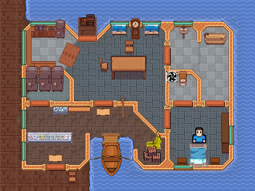

<div id="ajax-page" class="ajax-page-content">
    <div class="ajax-page-wrapper">
        <div class="ajax-page-nav">
            <div class="nav-item ajax-page-prev-next">
                <a class="ajax-page-load" href="project-visume.html"><i class="lnr lnr-chevron-left"></i></a>
                <a class="ajax-page-load" href="project-one-way-out.html"><i class="lnr lnr-chevron-right"></i></a>
            </div>
            <div class="nav-item ajax-page-close-button">
                <a id="ajax-page-close-button" href="#"><i class="lnr lnr-cross"></i></a>
            </div>
        </div>

        <div class="ajax-page-title">
            <h1>Avarice</h1>
            <p class="ajax-page-subtitle">One Million Quest Campaign: A Narrative RPG<br>Inspired by SukaSuka | Setting: Floating Islands</p>
        </div>

        <div class="row">
            <div class="col-sm-8 col-md-8 portfolio-block">
                <div class="owl-carousel portfolio-page-carousel">
                    <div class="item">
                        <a class="lightbox" href="img/portfolio/avarice/map.jpg" title="Map of Avarice: The Last City (Center), Old Island, Elf Island, The Forbidden Archive, Lumberjack Isle"></a>
                        <p class="portfolio-page-caption">Map of Avarice: The Last City (Center), Old Island, Elf Island, The Forbidden Archive, Lumberjack Isle</p>
                    </div>
                    <div class="item">
                        <a class="lightbox" href="img/portfolio/avarice/phases.png" title="Interaction Chart of the Sub Goals in the Game"></a>
                        <p class="portfolio-page-caption">Interaction Chart of the Sub Goals in the Game</p>
                    </div>
                    <div class="item">
                        <a class="lightbox" href="img/portfolio/avarice/intensity.png" title="Intensity Chart of the Game Progression"></a>
                        <p class="portfolio-page-caption">Intensity Chart of the Game Progression</p>
                    </div>
                    <div class="item">
                        <a class="lightbox" href="img/portfolio/wfh/wfh_1_post.png" title="WFH 1, reused as the protagonist's home"></a>
                        <p class="portfolio-page-caption">WFH 1, reused as the protagonist's home</p>
                    </div>
                </div>

                <script type="text/javascript">
                    jQuery(document).ready(function($){
                        $('.portfolio-page-carousel').imagesLoaded(function(){
                            $('.portfolio-page-carousel').owlCarousel({
                                smartSpeed:1200,
                                items: 1,
                                loop: false,
                                dots: true,
                                nav: true,
                                navText: false,
                                margin: 10,
                                autoHeight:true
                            });
                        });
                    });
                </script>

                <!-- About the Project -->
                <div class="project-overview">
                    <div class="block-title">
                        <h3>About the Project</h3>
                    </div>
                    <p class="text-justify">You escape petrification only to find that the world is unrecognisable. Armed with the skills of a former adventurer, navigate a world that has moved on, find what is left of the past and uncover the truth behind the disappearance of your kind.</p>
                    <p class="text-justify">Avarice is a story about the folly of man. We follow a protagonist who acts as the only survivor of mankind and as the key to understanding the fall of a civilization. The game bears the name of humanity's sin, not his.</p>
                    <p class="text-justify">A world where humanoids like elves and beastmen are now forced to live on floating islands to escape the monsters on the ground without the presence of humans.</p>
                    <p class="text-justify">For this project, I was told to reuse an old project, so I used the fisherman's home from <a href="project-wfh.html" class="ajax-page-load">WFH 1</a> as the protagonist's home. It wasn't originally designed to be his, but it fits a man who now lives quietly as a fisherman on the shoreline.</p>
                    <p class="text-justify"><em>[Design Intent: The haunting melody that plays after the kill is introduced as a seemingly innocuous musical cue. Its true significance is withheld until the Final Chapter.]</em></p>
                </div>
            </div>

            <div class="col-sm-4 col-md-4 portfolio-block">
                <!-- Project Info -->
                <div class="project-description">
                    <div class="block-title">
                        <h3>Project Info</h3>
                    </div>
                    <ul class="project-general-info">
                        <li><p><i class="fa fa-gamepad"></i> Narrative RPG</p></li>
                        <li><p><i class="fa fa-user"></i> Narrative, world &amp; level design</p></li>
                        <li><p><i class="fa fa-university"></i> DigiPen Bilbao</p></li>
                    </ul>

                    <div class="tags-block">
                        <div class="block-title">
                            <h3>Skills &amp; Tools</h3>
                        </div>
                        <ul class="tags">
                            <li><a>Narrative Design</a></li>
                            <li><a>World Building</a></li>
                            <li><a>Pacing &amp; Intensity</a></li>
                            <li><a>Resource Distribution</a></li>
                            <li><a>Foreshadowing</a></li>
                        </ul>
                    </div>
                    <div class="project-links">
                        <a class="btn-primary" href="files/Avarice_OneMillionQuest_JasonTeo.pdf" target="_blank" rel="noopener"><i class="far fa-file-pdf"></i> Full campaign document</a>
                    </div>
                </div>
                <!-- /Project Info -->
            </div>
        </div>
    </div>
</div>